大家好，我是 Chris。
作为一名摸爬滚打多年的程序员，最近半年我将全部精力投入到了 WiseMindAI 的开发中。在独立开发产品的过程中，我一直在寻找能真正融入工作流、而不仅仅是“补全代码”的 AI 工具。
WiseMindAI 是一款本地优先的 AI 学习与知识管理平台，官方网址 👉 https://wisemindai.app
市面上的 Cursor、GitHub Copilot 等大家都很熟悉了，但今天我想聊一款最近非常热门的开源 AI 编码神器——OpenCode。深度集成到工作流中的 AI Agent，帮助解决开发者在复杂项目中的上下文理解与自动化执行难题。
今天这篇文章，我就结合官方指南和我个人的理解，带大家从全方位了解这款工具。
一、OpenCode 介绍
OpenCode 是一个开源的 AI Agent 编码工具。它可以通过终端界面、桌面应用程序或 IDE 扩展来使用。
核心定位：它是一个开源、隐私优先且高度可定制的 AI 编码代理。 支持多种使用场景：不仅支持 TUI（终端图形界面）模式，也支持通过 CLI、桌面应用和 VS Code 扩展插件运行。 生态数据：目前 GitHub 上已有 50k+ Star，拥有 650k+ 月活开发者。
OpenCode 最大的吸引力在于它的开放性和多场景支持，不仅支持完全本地化的模型部署，还支持 75+ 种 LLM 提供商，如 Anthropic、Github Copilot、OpenAI、Google、智谱 AI 等。使用起来更加灵活。
官方网址：https://opencode.ai/
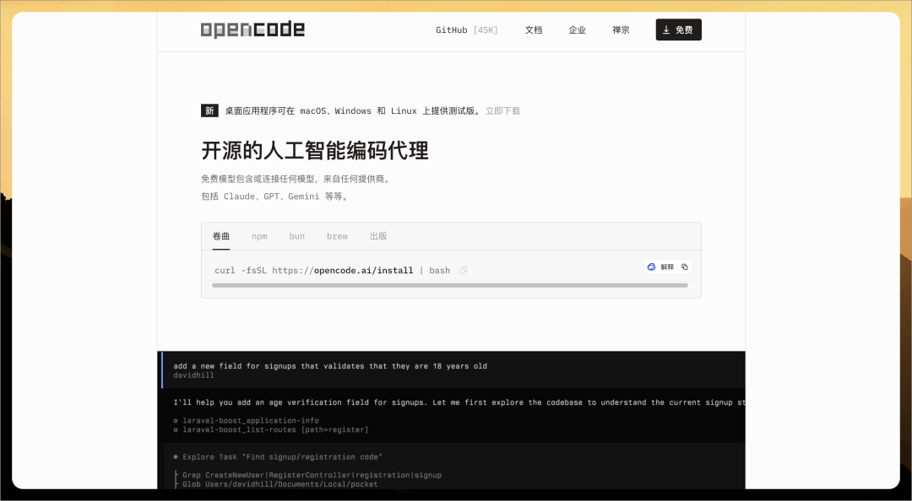
二、桌面端使用
1.下载安装
接下来 Chris 先介绍如何安装和使用桌面端，使用起来比较简单。
首先打开官网下载页 https://opencode.ai/download ，按照你的电脑系统选择合适版本下载并安装。
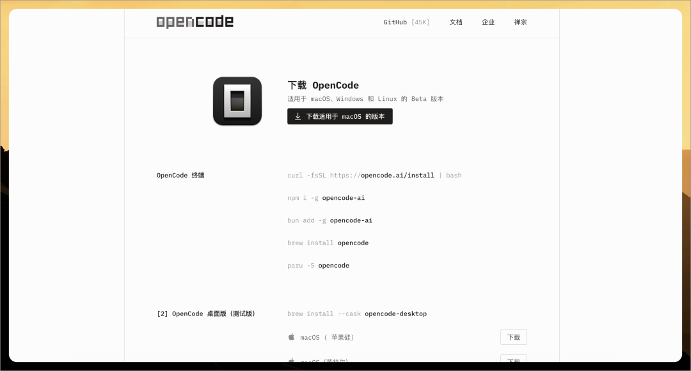
2.选择模型
安装完成后，首先添加一个项目进来，然后点击底部模型选择框按钮，选择一个 LLM 模型即可开始使用：
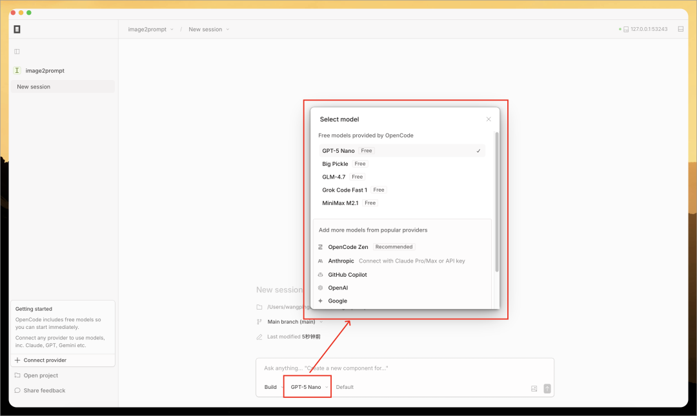
OpenCode 非常不错，目前内置了五个免费模型！大大方便了新手用户，包括：
GPT-5 Nano Big Pickle GLM-4.7 Grok Code Fast 1 MiniMax M2.1
当然你也可以选择下面其他模型，如 Anthropic、Github Copilot、OpenAI、Google、OpenRouter、智谱 AI 等等。
所有模型提供商介绍：https://opencode.ai/docs/providers
3.开始使用
Chris 把之前 Vibe Coding 的一个浏览器插件项目（https://github.com/pingan8787/image2prompt）导入到 OpenCode，然后输入下面任务：
插件还要在页面右键菜单，支持一键提取页面所有图片，一起下载并保存到用户选择的本地文件夹
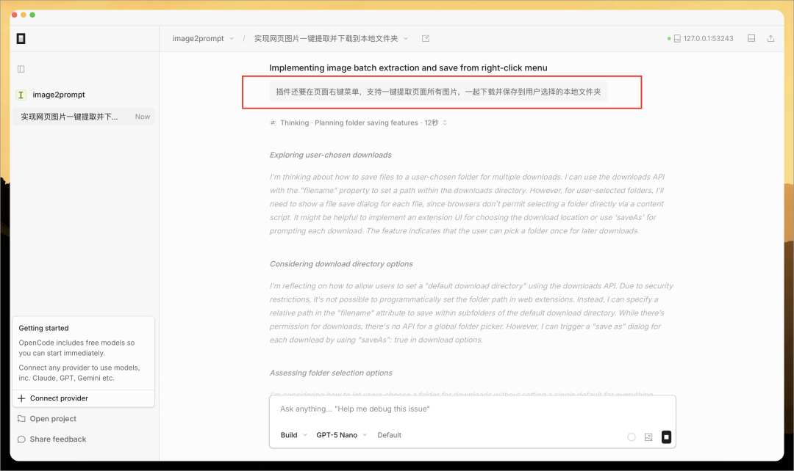
等待 OpenCode 开发完成后，即可看到修改的文件和修改的内容：
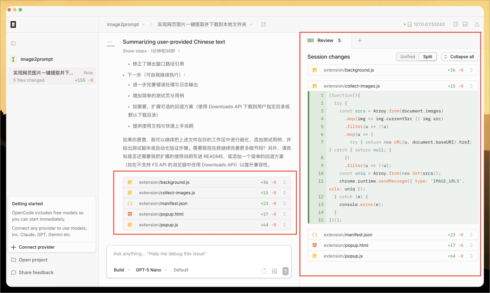
如果你使用 Git 进行代码管理，这时候可以打开终端工具，使用 git 命令管理代码即可。
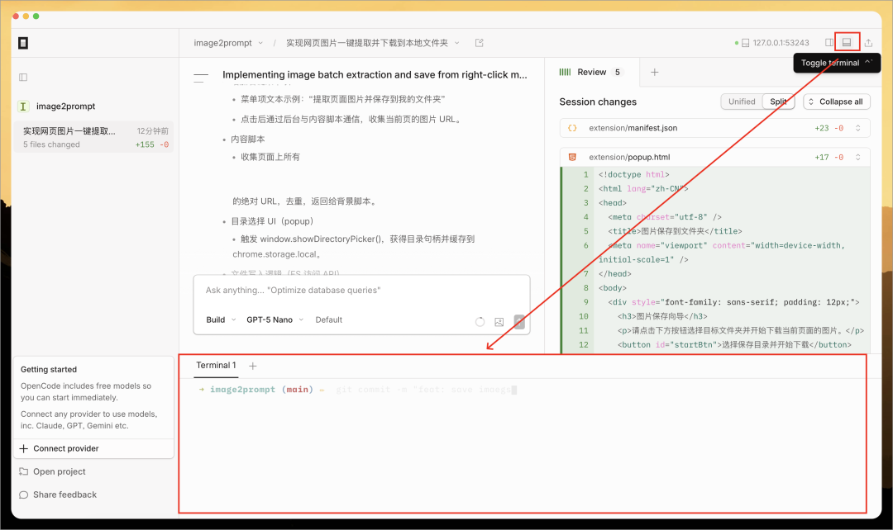
4.与其他编辑器区别
OpenCode 客户端编辑器并不像其他 IDE，支持查看和编辑文件，更像是 Cursor 的 Agent 模式，纯对话的交互方式。也像是 Claude Code 的可视化版本，只需要关心让 AI 做什么事，而不用关注写代码。
对于非技术人员来说，更加方便。
三、桌面端其他功能
除了前面简单介绍如何使用，桌面端编辑器还支持一些其他功能：
1.输入 @ 引用内容
OpenCode 客户端支持在对话框中输入 @ 引用项目中的文件、文件夹等内容，作为对话上下文，能够更准确的修改某些代码，这个功能在其他 AI IDE 也都有，属于比较常用的功能了。
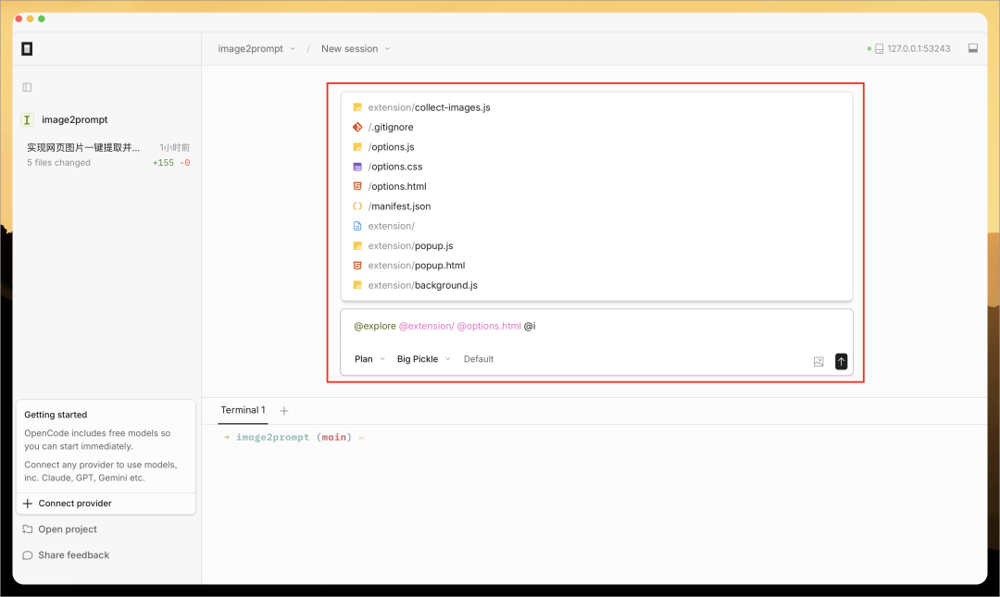
2.输入 / 执行命令
OpenCode 客户端支持在对话框中输入 / 执行系统命令，比如：
/init：初始化创建一个 AGENTS.md ，这个文件对 OpenCode 来说非常重要，后面章节详细介绍；/review：review 异动的文件代码，默认是 review 未提交的代码；/new：创建一个新会话/open：搜索并打开一个文件/terminal：显示或隐藏一个终端/model：选择一个模型/mcp：开启或关闭 MCP/agent：选择一个 Agent 执行
还有 /undo、/compact等命令。
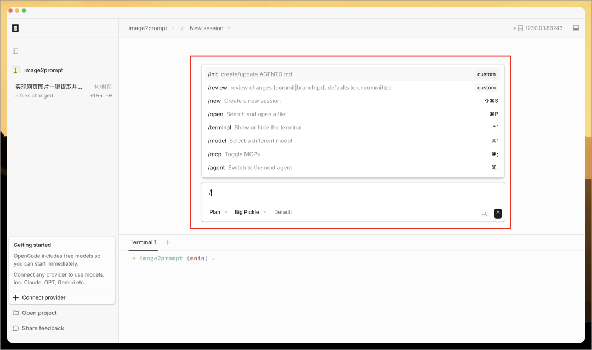
3.上下文详情
你还可以点击输入框下面的“上下文”按钮，查看当前会话的上下文信息，比如：
Context Limit：上下文长度限制 Total Tokens：总 token 数 Usage：当前使用量 Total Cost：当前账单
还有其他数据，大家可以按需查看了解。
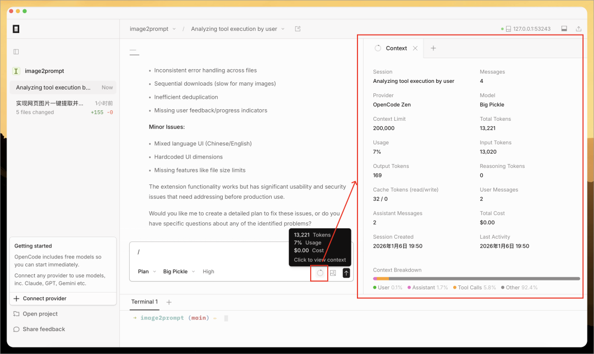
4.查看文件详情
当你需要查看具体某个文件的代码时，也可以直接点击右侧面板“+”按钮，然后输入文件名打开即可。要注意的是，这里的文件只能预览，不支持修改。
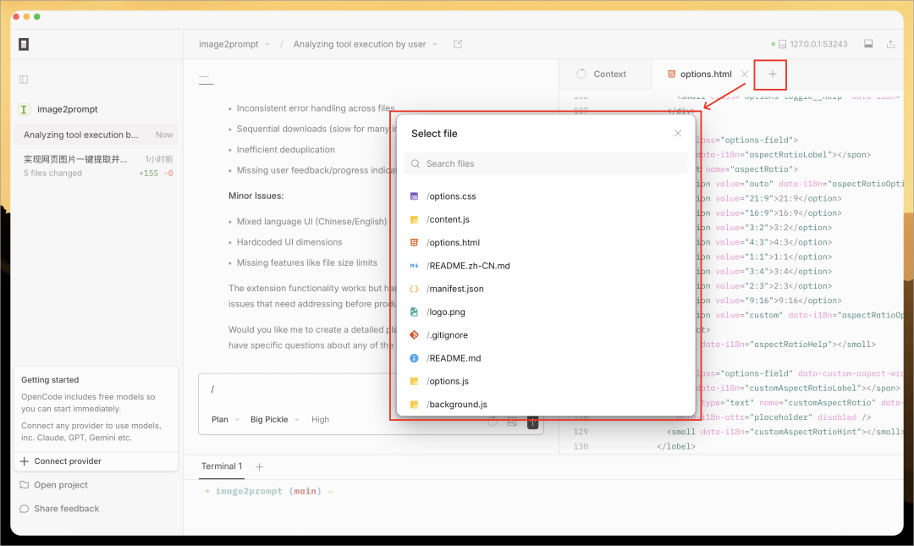
5.Build 模式和 Plan 模式
OpenCode 支持 Build 和 Plan 两种核心模式，目的是通过权限分离来确保代码操作的安全性与准确性，其中：
Build 模式
专注于执行实际操作，拥有完整的工具权限，可以执行文件编辑、运行 Shell 命令等，这是 AI 真正“干活”的模式。当你对 Plan 模式生成的计划满意后，切换到这里让 AI 落地代码 。
Plan 模式
专注于分析和规划任务，权限受限，处于只读状态，AI 无法修改文件或执行危险命令。适合用来解析复杂需求、生成实施步骤或审阅代码变更计划，从而避免 AI 直接上手导致误操作 。
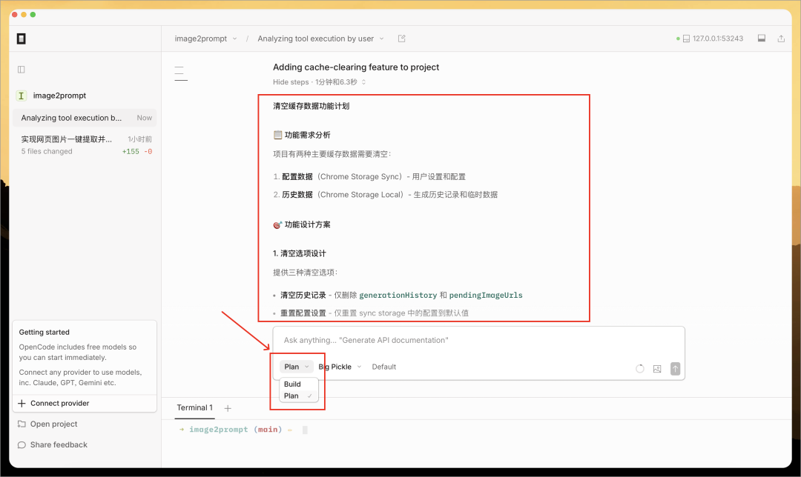
面对复杂需求时，官方推荐采用“先规划，后执行”的流程 ：
先在 Plan 模式，下输入需求（甚至可以拖入设计图），让 AI 生成实施步骤； 确认计划无误后，按 Tab 切回 Build 模式； 输入 "Go ahead" 等指令，观察 AI 自动创建文件、修改代码并运行测试。
6.添加图片
OpenCode 编辑器还支持上传 UI 稿等图片资源进行对话，你可以上传一些方案、UI 稿、草稿图等，让 AI 按照要求进行开发：
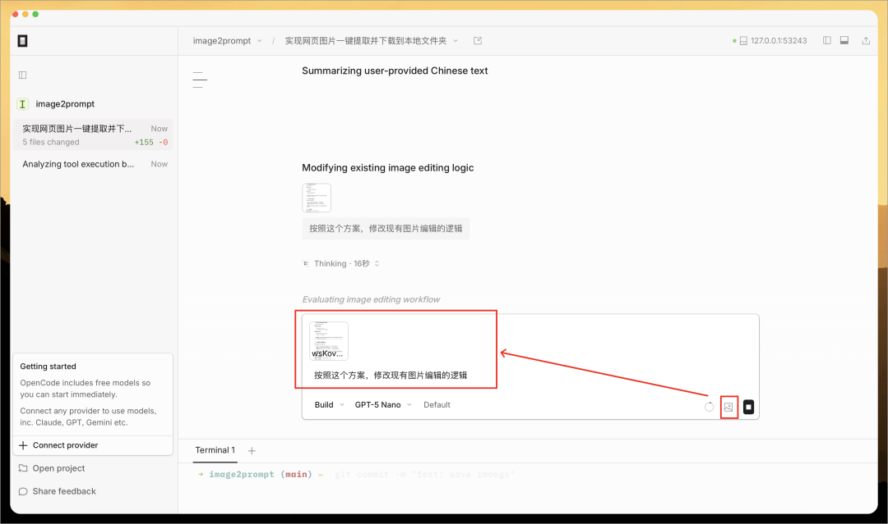
四、IDE 插件介绍
OpenCode 还支持以 IDE 插件形式使用，目前支持 VSCode、Cursor、Windsurf 和 VSCodium 等。
官方介绍：https://opencode.ai/docs/ide/
1.安装插件
安装时，在拓展程序中搜索“OpenCode”即可下载安装：
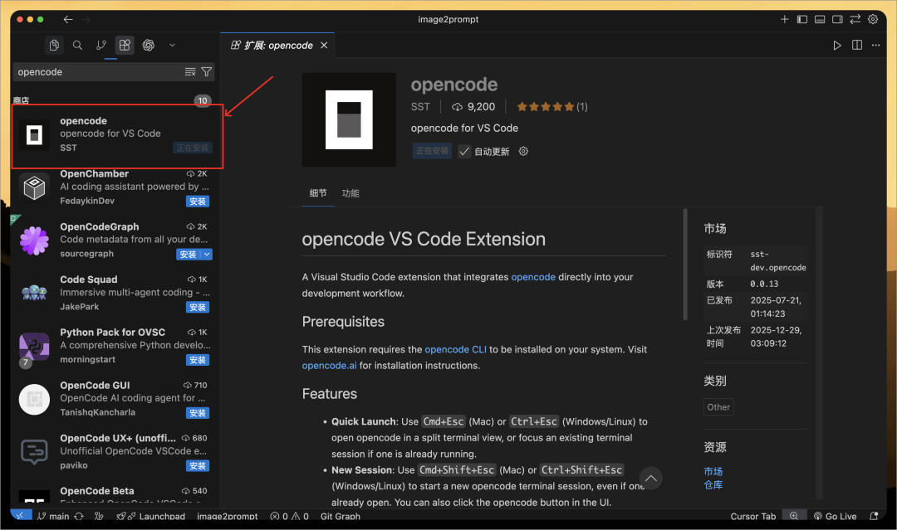
安装完成后，即可在 IDE 的终端中，输入 opencode命令使用：
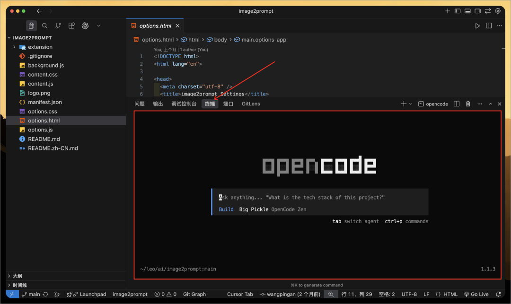
2.命令介绍
根据界面提示，可以按快捷键：
tab：切换 Agentctrl+p：选择命令执行
比如 Chris 按 ctrl+p 快捷键，显示了所有命令，选择需要执行的命令，按回车即可执行：
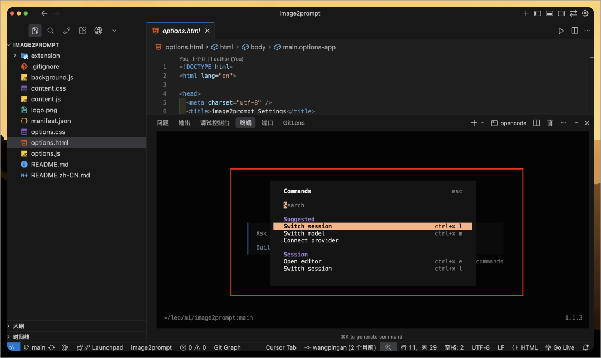
其他操作跟客户端编辑器、TUI 一致，比如输入 @ 引用文件或内容、输入 / 执行命令等：
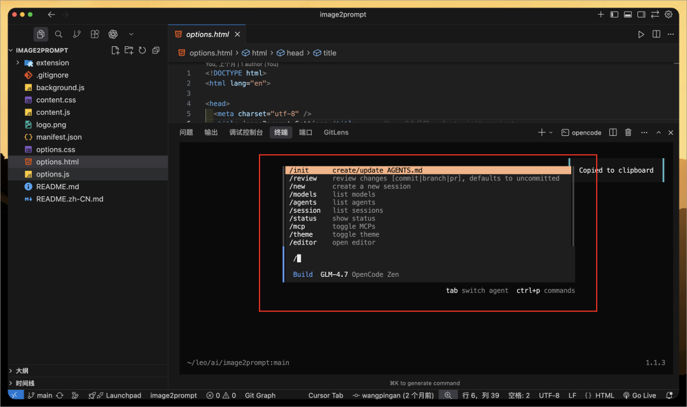
五、TUI 介绍
OpenCode 的 TUI（终端图形界面）安装非常符合程序员的直觉，不需要复杂的环境配置。
下载方式：https://opencode.ai/download
官方介绍：https://opencode.ai/docs/tui/
1.下载安装
如果你使用的是 macOS 或 Linux，官方推荐直接使用脚本安装，打开终端命令行工具输入下面命令：
curl -fsSL https://opencode.ai/install | bash
如果你是 Node.js 用户，也可以通过 npm 全局安装：
npm install -g opencode-ai
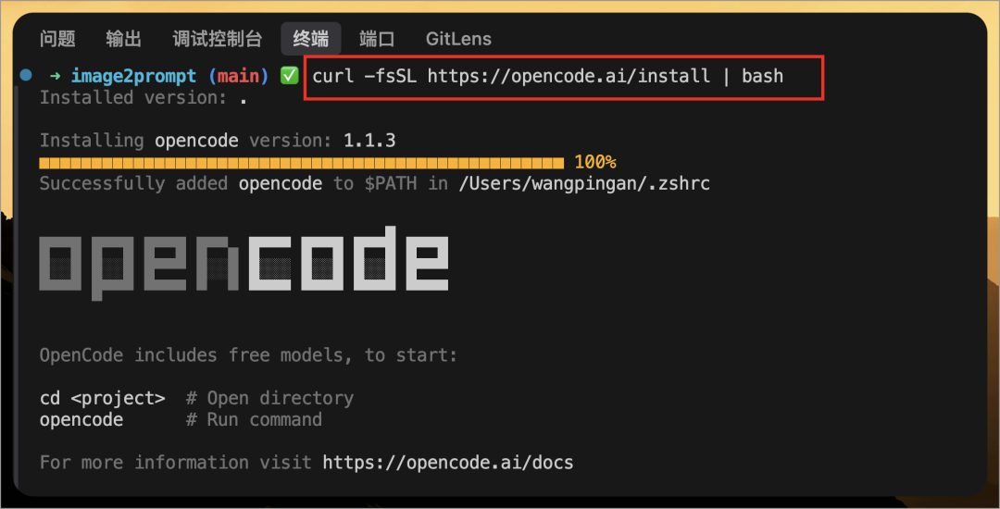
2.使用模型
安装完成后，你需要连接模型。对于初学者，我建议直接使用官方托管的 OpenCode Zen，因为它提供了经过基准测试的稳定模型（如 GPT 5.1 Codex），能避免很多开源模型“乱说话”的情况。
在终端运行：
opencode
然后在界面中输入 <font style="color:rgb(68, 71, 70);">/connect 并粘贴你的 API Key 即可。
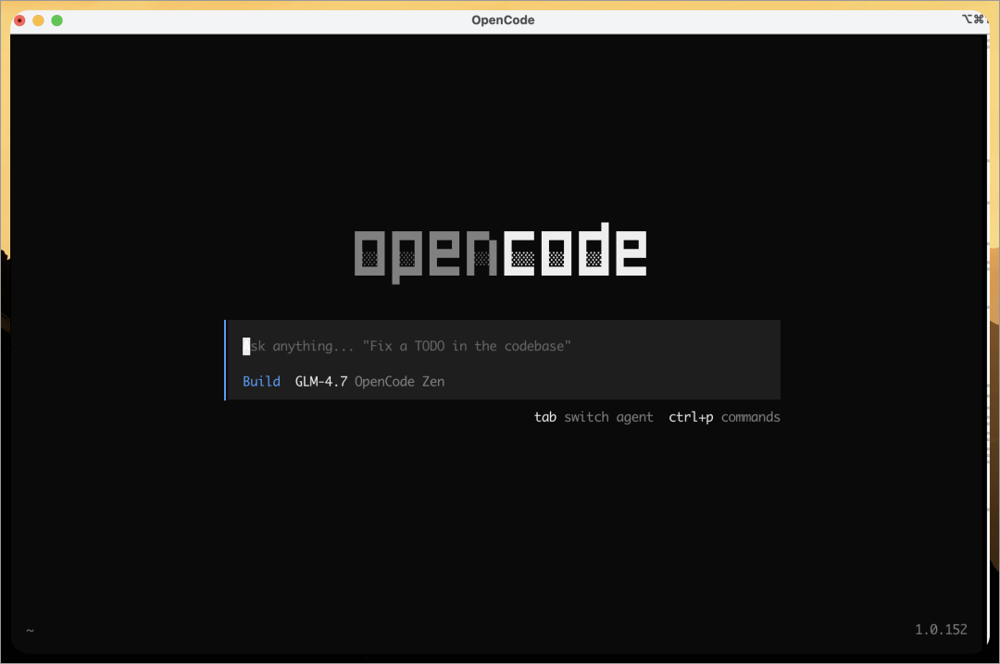
3.初始化项目
进入你的代码仓库（比如我的 image2prompt 项目目录），运行：
opencode init
它会自动分析你的项目结构，并生成一个 <font style="color:rgb(68, 71, 70);">AGENTS.md 配置文件，为后续的开发打好基础。
其他使用方式，与 IDE 插件的交互是一样的，这里不详细介绍。
六、Zen 介绍
OpenCode Zen 是由 OpenCode 团队提供的经过测试和验证的模型列表，属于官方推荐的精选模型，目前还处在测试阶段。
官方介绍：https://opencode.ai/docs/zen/
支持的模型很多，还包括免费的 GPT-5 Nano、Big Pickle、GLM-4.7、Grok Code Fast 1、MiniMax M2.1：
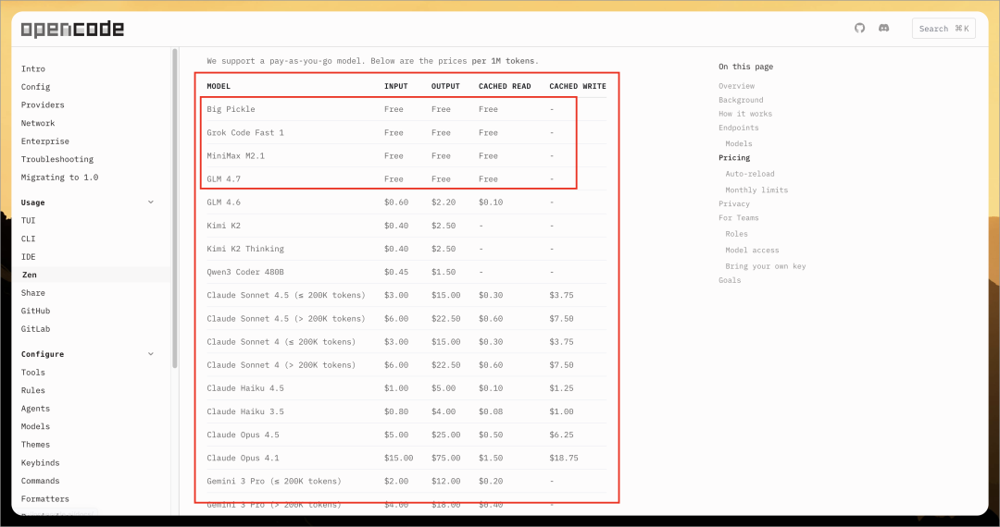
使用时，先打开 https://opencode.ai/zen 的 “API Keys”标签页，创建一个新的 API Key：
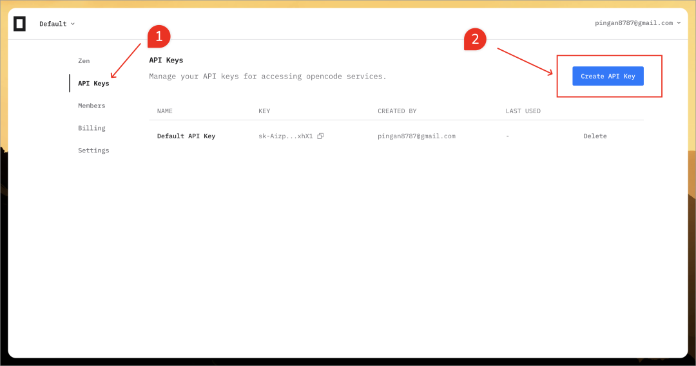
然后在 OpenCode 中按快捷键 ctrl+p选择“Connect provider”，再选择“OpenCode Zen”：
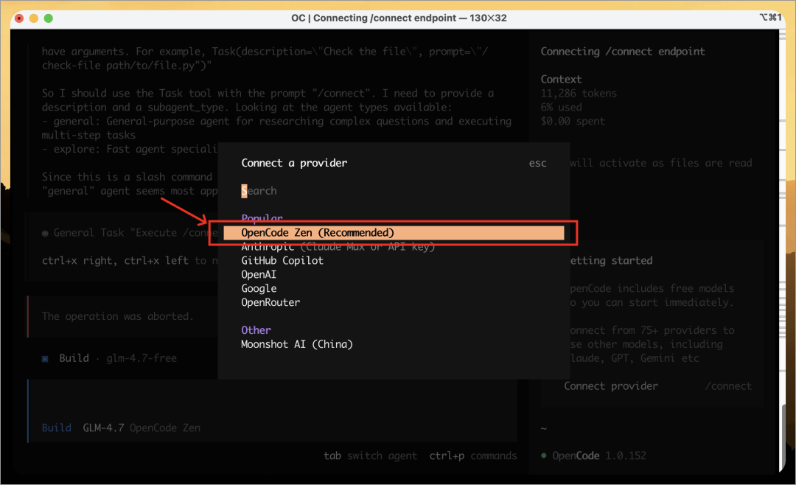
然后输入前面复制的 API Key 回车即可：
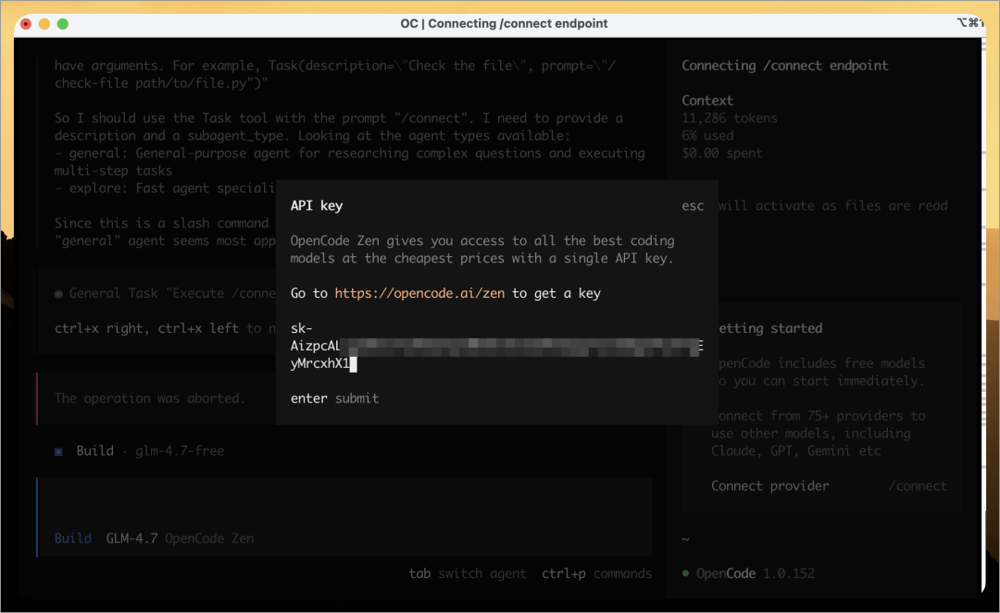
七、CLI 介绍
OpenCode 提供了丰富的 CLI 命令用于自动化和管理。
官方介绍：https://opencode.ai/docs/cli/
常见命令如：
opencode run：非交互式执行，脚本化任务，如 opencode run "fix lint errors"opencode serve：启动 Headless 服务，提供 HTTP API，供 IDE 插件或远程连接使用opencode web：Web 界面模式，在浏览器中通过图形界面操作 OpenCodeopencode stats：查看统计，Token 消耗、成本估算、工具使用频率
八、高级用法
OpenCode 还有很多高级用法，这里暂时不一一介绍，详细可以查看：
LSP Servers：https://opencode.ai/docs/lsp/ MCP Servers：https://opencode.ai/docs/mcp-servers/ Agent Skills：https://opencode.ai/docs/skills/ ACP Support：https://opencode.ai/docs/acp/ Custom Tools：https://opencode.ai/docs/custom-tools/ Tools 管理：https://opencode.ai/docs/tools/
七、总结
OpenCode 是一款不仅限于“写代码”的工具，它更像是一个能够理解上下文并执行系统级任务的 DevOps 伙伴。
我推荐以下人群尝试：
全栈开发者：需要在前后端复杂上下文中反复横跳的（像我做 WiseMindAI 时经常这样）。 运维/DevOps：喜欢用 CLI 写自动化脚本管理基础设施的。 隐私敏感型团队：必须确保代码不上传云端，依赖本地模型的团队。
给新手的建议：
先从 OpenCode Zen 提供的推荐模型开始体验，因为不同模型的量化参数会导致编码能力差异巨大，Zen 帮你解决了“模型不稳定”的问题。等你熟悉了它的 TUI 操作逻辑后，你会发现离开鼠标写代码的效率简直起飞。
希望这篇指南能帮你打开 AI 编程的新大门。如果你也在用 OpenCode，欢迎在评论区分享你的使用心得！